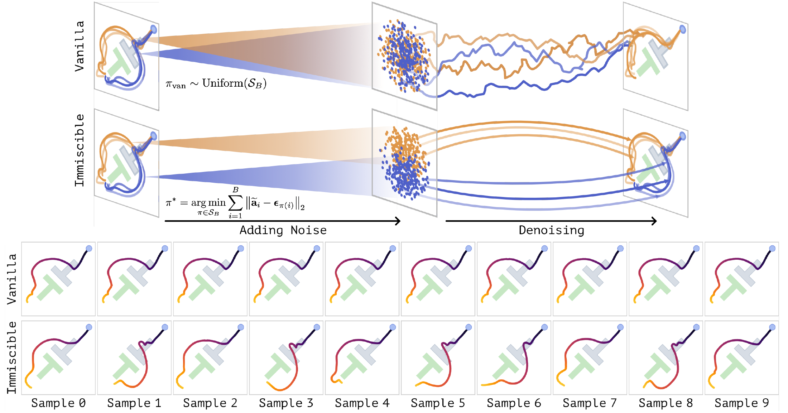
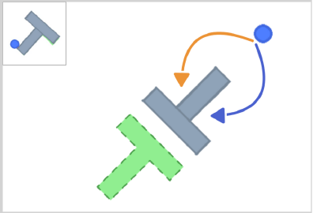
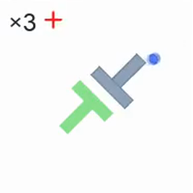
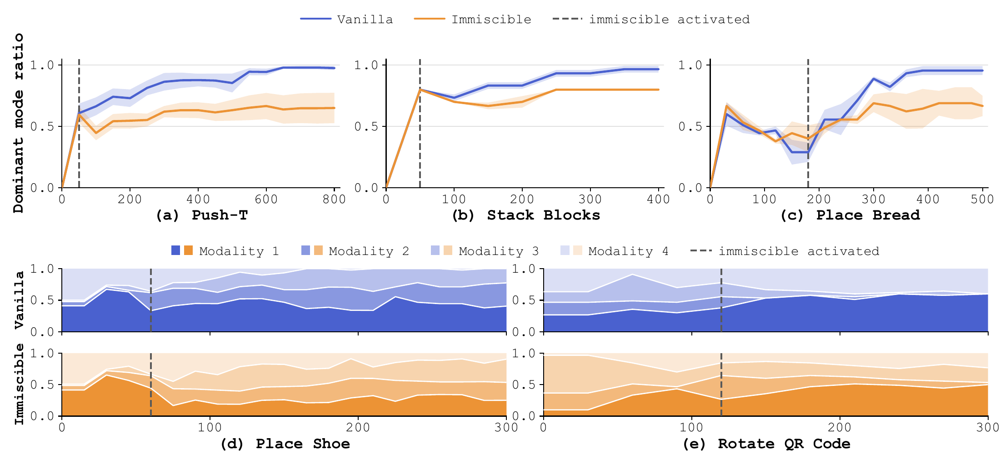

Sample noise
Draw one Gaussian noise sample per action chunk. Standardize the action coordinates across the batch for computing the matching cost.
Preserving Multimodal Robot Actions
through Label-Free Noise Assignment
Under review for ICRA 2027
1 University of California, Berkeley2 Princeton University3 The University of Texas at Austin
* Equal contribution
A robot can often complete the same task in several ways: push an object clockwise or counterclockwise, pick it up with either hand, or place it in different valid orientations. A diffusion policy should be able to reproduce these alternatives from the demonstrations.
In our experiments, however, the policy can concentrate on a single behavior even when the training data and individual batches are balanced. A different random noise sample does not necessarily produce a different action modality.
Retaining those alternatives matters when a change in the environment makes the preferred behavior infeasible. For example, an obstacle may block one pushing direction while leaving the other available. We study how to preserve this diversity without requiring modality labels or changing policy inference.
Clockwise
Counterclockwise
Diffusion policies can exhibit modality collapse even when the demonstration data is well balanced. Although the demonstrations cover multiple valid behaviors in balanced proportions, the learned policy can concentrate on one behavior or a subset of behaviors. We observe this even when mirrored demonstrations enforce exact symmetry within every training batch.
In Push T, vanilla policies assign an average of 97.6% of rollouts to a single modality across 10 training seeds, with the preferred direction varying across seeds. Eight of the 10 policies generate only one modality across all 50 evaluation rollouts, despite equal representation of both directions in every training batch.
The same failure extends across all seven tasks: vanilla policies strongly favor one modality on the simulation tasks with two modalities, lose a modality on both tasks with four modalities, and use only one hand on both humanoid tasks.
Our analysis connects modality collapse to the way actions are paired with noise during training. Independent pairing can mix diffusion paths from different action modalities, weakening the denoiser’s ability to distinguish them.
Immiscible Diffusion Policy assigns each action chunk to exactly one noise sample within a training batch. Hungarian matching organizes the mapping from noise to actions, helping distinct modalities remain reachable. The assignment requires no modality labels and leaves the policy architecture and inference procedure unchanged.

Draw one Gaussian noise sample per action chunk. Standardize the action coordinates across the batch for computing the matching cost.
Use Hungarian assignment to minimize total Euclidean distance between action chunks and noise. Every noise sample is used exactly once.
Use the reassigned noise in the diffusion objective. Keep the policy architecture, observation conditioning, and inference procedure unchanged.
The assignment minimizes the sum of Euclidean distances between flattened action chunks standardized across the batch and the sampled noise. Standardization is used only to compute this cost; the diffusion objective uses the original normalized actions.
π permutes the B noise samples in a training batch.
Input: A batch of observations and normalized action chunks {(oi, ai)}i=1B, policy parameters θ, and diffusion schedule ᾱ.
Notation: D is the number of action coordinates per chunk; μB and σB are their coordinate means and standard deviations across the batch. mi is the existing loss mask, or all ones when no mask is used.
We evaluate five simulation tasks and two tasks on a Unitree G1 humanoid, using Diffusion Policy (DP) and 3D Diffusion Policy (DP3). The experiments span state, RGB, and point cloud observations, with two or four valid modalities defined by pushing direction, arm choice, placement orientation, or rotation direction.
We evaluate how often each demonstrated modality appears in policy rollouts. Across the three simulation tasks with two modes, Immiscible increases the frequency of the minority mode by 6.0 to 14.6 times. On both tasks with four modes, it recovers a modality that is absent from vanilla rollouts. On each G1 task, both hand modalities appear in a 50:50 split.


Rollout modality distribution % of rollouts
Figure 5

Upper plots: how strongly the policy favors one behavior. For the three tasks with two modalities, the curves show the fraction of rollouts assigned to the dominant modality. A value near 1 means nearly every rollout follows the same behavior; 0.5 represents equal use of both behaviors. As training progresses, vanilla Diffusion Policy increasingly favors one modality. After noise assignment is activated, Immiscible keeps more rollouts in the alternative modality.
Lower plots: which behaviors remain available. For Place Shoe and Rotate QR Code, each colored band shows the fraction of rollouts using one of the four modalities. A band that shrinks to zero indicates that the corresponding behavior is no longer generated. Vanilla loses a demonstrated modality in both tasks, while Immiscible preserves all four with a more balanced distribution. These plots measure behavioral diversity over training; task coverage and success are reported separately in the table below.
Table I
| Task | Expert data (%) | Policy | Frequencies in vanilla order (%) | Task metric (%) | Seeds |
|---|---|---|---|---|---|
| Push-T | 43.1 / 56.9 | Vanilla | 97.60 ± 1.62 / 2.40 ± 1.62 | Coverage: 95.16 ± 0.30 | 10 |
| Push-T | Immiscible | 65.00 ± 7.64 / 35.00 ± 7.64 | Coverage: 95.39 ± 0.10 | 10 | |
| Stack Blocks | 50.0 / 50.0 | Vanilla | 96.67 ± 2.72 / 3.33 ± 2.72 | Success: 96.67 ± 2.72 | 3 |
| Stack Blocks | Immiscible | 80.00 ± 0.00 / 20.00 ± 0.00 | Success: 96.67 ± 2.72 | 3 | |
| Place Bread | 51.0 / 49.0 | Vanilla | 95.56 ± 3.63 / 4.44 ± 3.63 | Success: 100.00 ± 0.00 | 3 |
| Place Bread | Immiscible | 66.67 ± 8.31 / 33.33 ± 8.31 | Success: 97.78 ± 1.81 | 3 | |
| Place Shoe | 25.7 / 23.8 / 24.3 / 26.2 | Vanilla | 37.80 ± 14.50 / 37.80 ± 15.50 / 24.40 ± 1.80 / 0.00 ± 0.00 | Success: 100.00 ± 0.00 | 3 |
| Place Shoe | Immiscible | 24.92 ± 1.75 / 29.68 ± 4.89 / 29.37 ± 5.53 / 16.03 ± 8.16 | Success: 93.33 ± 3.14 | 3 | |
| Rotate QR Code | 23.3 / 24.8 / 26.7 / 25.2 | Vanilla | 57.80 ± 11.90 / 35.60 ± 12.70 / 6.70 ± 3.10 / 0.00 ± 0.00 | Success: 86.67 ± 5.44 | 3 |
| Rotate QR Code | Immiscible | 44.40 ± 9.60 / 17.80 ± 6.50 / 26.70 ± 6.30 / 11.10 ± 6.50 | Success: 73.33 ± 3.14 | 3 | |
| Fruit-to-Plate | 50.0 / 50.0 | Vanilla | 100.00 / 0.00 | Success: 75.00 | 1 |
| Fruit-to-Plate | Immiscible | 50.00 / 50.00 | Success: 60.00 | 1 | |
| Can-to-Bin | 50.0 / 50.0 | Vanilla | 100.00 / 0.00 | Success: 100.00 | 1 |
| Can-to-Bin | Immiscible | 50.00 / 50.00 | Success: 90.00 | 1 |
We identify action modality collapse as an important limitation of diffusion policies for robotic action generation. Policies can concentrate on a single modality or a subset of modalities even when demonstrations are balanced and symmetry is enforced within every training batch. Our analysis connects this behavior to independent pairing of actions and noise, which increases the mixing and crossing of diffusion paths and weakens the denoiser’s sensitivity to differences between modalities in clustered action spaces of low dimensionality.
Immiscible Diffusion Policy addresses this issue by coupling action chunks with noise samples during training, without modality labels or changes to the policy architecture or inference procedure. Across simulation and real world tasks, it improves modality preservation while maintaining strong task performance, preserving suppressed behaviors and recovering valid modalities absent from vanilla rollouts. These results show that explicit coupling between actions and noise offers a simple and broadly applicable approach to preserving action multimodality in robot planning with diffusion policies.
@article{zhang2026immiscible,
title={Immiscible Diffusion Policy: Preserving Multimodal Robot Actions
through Label-Free Noise Assignment},
author={Zhang, Xiao and Chen, Yuxin and Liang, Zhixuan and Zhan, Guojian
and Li, Chenran and Xu, Chenfeng and Tomizuka, Masayoshi and Li, Yiheng},
journal={arXiv preprint arXiv:2610.09369},
year={2026}
}